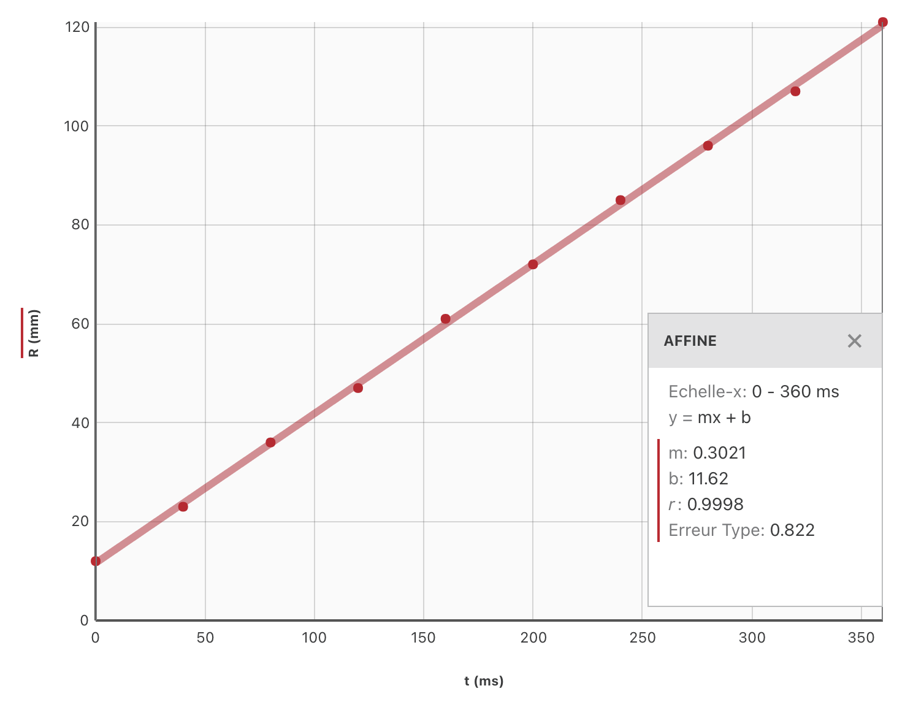
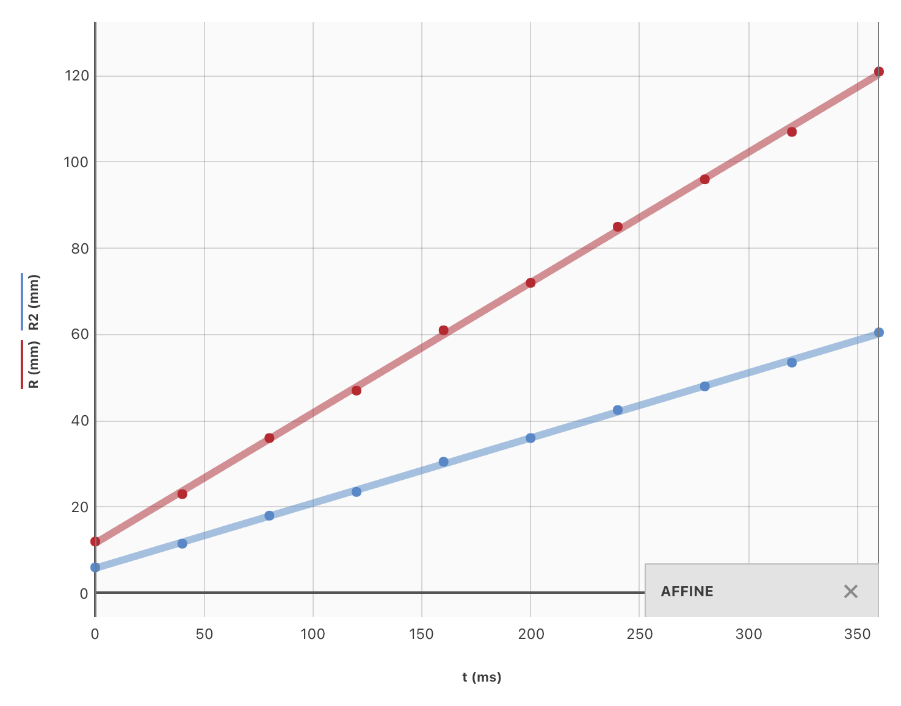
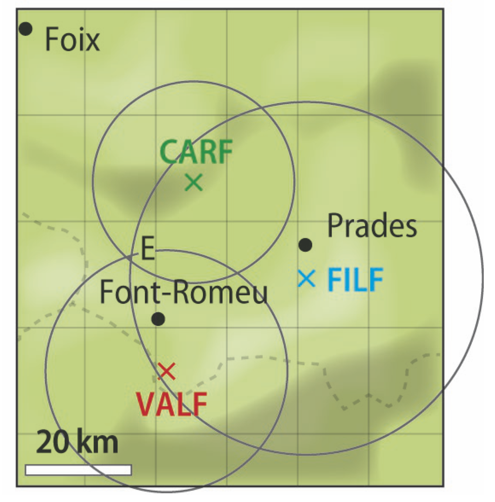

Exercice N°31, page 343
Corrigé
-
La fréquence $f$ est le nombre de périodes par seconde, donc $$ f = \dfrac{1}{T} = \dfrac{1}{\pu{9,5 s}} = \pu{0,11 Hz} $$
-
La longueur d’onde est la distance parcourue par l’onde pendant une période (temporelle) $T$, donc $$ \lambda = vT = \pu{6,0 m.s^{- 1}} \times \pu{9,5 s} = \pu{57 m} $$
-
La longueur d’onde est la période spatiale de l’onde, c’est donc la plus petite longueur au bout de laquelle on retrouve le même état vibratoire dans le milieu. Les deux bouchons doivent être espacés de $\pu{57 m}$.
N° 32, page 343
Corrigé
-
La fréquence étant le nombre de périodes par seconde, $$ T = \dfrac{1}{f} = \dfrac{1}{\pu{880 Hz}} = \pu{1,1e-3 s} $$
-
La longueur d’onde est la distance parcourue par l’onde pendant une période (temporelle) $T$, $$ \lambda = vT = \dfrac{v}{f} $$ On ne nous donne pas la célérité du son dans l’air, si on utilise $v = \pu{340 m.s-1}$, $$\lambda = \dfrac{\pu{340 m.s-1}}{\pu{880 Hz}} = \pu{0,386 m}$$
-
$\dfrac{\pu{0,92 m}}{\pu{0,386 m}} = \pu{2,4}$
La longueur $\pu{0,92 m}$ n’est pas un multiple entier de la longueur d’onde, les deux points ne sont donc pas en phase.
N°33, page 343
Corrigé
-
On ne peut parler de longueur d’onde que pour les ondes périodiques sinusoïdales. L’onde est donc bien périodique.
-
La fréquence étant égale au nombre de périodes par seconde, $$ T = \dfrac{1}{f} = \dfrac{1}{\pu{3,5 Hz}} = \pu{0,29 s} $$
-
La longueur d’onde est la distance parcourue par l’onde pendant une période (temporelle) $T$, donc $$ \lambda = vT \Longleftrightarrow v = \dfrac{\lambda}{T} = \dfrac{\pu{15e-2 m}}{\pu{0,29 s}} = \pu{0,52 m.s-1} $$
N°34, page 343
Corrigé
$$ T = \pu{2 ms} $$ et $$ f = \pu{5e2 Hz} $$
N°35, page 343
Corrigé
Cette onde est une onde sinusoïdale. Elle possède une amplitude égale à $\pu{2,5 Pa}$ et une longueur d’onde égale à $\lambda = \pu{8 mm}$.
La période temporelle $T$ vaut
$$
T = \dfrac{\lambda}{v} = \dfrac{\pu{8e-3}}{\pu{500 m.s^-1}} = \pu{1,6e-5 s}
$$
et la fréquence
$$
f = \dfrac{1}{T} = \dfrac{1}{\pu{1,6e-5 s}} = \pu{6,3e4 Hz}
$$
Remarque : si on applique les règles données pour déterminer le nombre de chiffres significatifs, on ne doit conserver qu’un seul chiffre significatif pour le résultat de chaque calcul.
N°36, page 343
Corrigé
-
Sur le document, $\pu{3,1 cm}$ correspondent à $\pu{6,0 cm}$ dans la réalité. 4 longueurs d’onde à l’écran s’étalent sur une longueur égale à $\pu{2,3 cm}$ ; la longueur d’onde est donc égale à $$ \lambda = \dfrac{\pu{2,3 cm} \times \pu{6,0 cm}}{4 \times \pu{3,1 cm}} = \pu{1,1 cm} $$ La longueur d’onde est la distance parcourue par l’onde pendant une durée égale à la période $T$, on a donc $$ \lambda = vT = \dfrac{v}{f} \Longleftrightarrow v = \lambda f $$ A.N. $v = \pu{1,1 cm} \times \pu{20 Hz} = \pu{1,1 cm} \times \pu{20 s-1} = \pu{22 cm.s-1}$
-
$v’ = \lambda’ f’ = \pu{6,8 cm} \times \pu{40 Hz} = \pu{6,8 cm} \times \pu{40 s-1} = \pu{2,7e2 cm.s-1}$
On se rend compte que la célérité de l’onde a changé.
Remarque : cette question est hors-programme
-
Votre programme se concentre sur les milieux non dispersifs : *dans un milieu non dispersif, la célérité d’une onde mécanique ne dépend que des caractéristiques de ce milieu et d’aucune des caractéristiques de l’onde}}.
L’air n’est pas un milieu dispersif pour les ondes sonores. -
Dans un milieu dispersif, *la célérité d’une onde mécanique dépend des caractéristiques du milieu mais aussi de la fréquence (période temporelle) de l’onde}}.
L’eau est un milieu dispersif pour les ondes qui se propagent à sa surface.
N°52, page 347
Corrigé
-
La durée qui sépare deux images est égale à $$ \dfrac{\pu{1 s}}{25} = \pu{0,040 s} = \pu{40 ms} $$ Comme l’origine des temps n’est pas spécifiée dans cet exercice, on peut choisir $t_1 = 0$ pour la première image ; la seconde sera alors prise à la date $t_2 = \pu{40 ms}$, la troisième à la date $t_3 = 2 \times \pu{40 ms} = \pu{80 ms}$, etc.
-

-
La vidéo n’a pas débuté à la date 0 choisie, puisque $R (t_0) \neq 0$.
-
$R$ représente la distance parcourue par l’onde. Puisque le graphe affiche $R = f (t)$, la pente de la droite qui modélise le comportement de $R$ en fonction du temps est la célérité de l’onde. On peut déterminer manuellement cette pente ou utiliser le résultat de la modélisation : $$ v = \pu{0,30 mm.ms-1} = \pu{0,30 m.s-1} $$
-
-
D’après l’énoncé, $v = k \sqrt{h}$ où $k$ est un coefficient de proportionnalité et $h$ la profondeur de l’eau à l’endroit où se trouve l’onde. Si la profondeur est quatre fois plus petite, la vitesse sera $\sqrt{4} = 2$ fois plus petite. Pendant la même durée la distance parcourue sera deux fois plus petite (puisque la célérité de l’onde est constante).
 -
En haute mer, la profondeur de l’eau est supérieure à la profondeur de l’eau près de la côte donc le tsunami a une célérité supérieure en haute mer par rapport à la célérité près de la côte.
N°53, page 347
Corrigé
-
La distance parcourue par les ultrasons est égale à $2L$.
-
$\tau$ est le retard (à l’arrivée au niveau des récepteurs) que présente l’onde qui s’est propagée dans l’air par rapport à celle qui s’est propagée dans l’eau.
$\tau = \pu{2,5e-3 s}$ -
Sur la trace 2 le signal est détecté plus tôt que sur la trace 1 ; c’est donc le signal enregistré par le récepteur qui reçoit les ultrasons ayant voyagé dans l’eau, puisque ces derniers possèdent une célérité plus grande dans l’eau que dans l’air.
-
$t_{\text{air}} = \dfrac{2L}{v_{\text{air}}}$
-
$t_{\text{eau}} = \dfrac{2L}{v_{\text{eau}}}$
-
$\tau = t_{\text{air}} - t_{\text{eau}}$ donc $\tau = \dfrac{2L}{v_{\text{air}}} - \dfrac{2L}{v_{\text{eau}}}$ et $$ v_{\text{eau}} = \dfrac{ 2L\, v_{\text{air}} }{ 2L - \tau\, v_{\text{air}}} $$ A.N. $v_{\text{eau}} = \dfrac{ 2 \times \pu{55e-2 m} \times \pu{340 m.s^-1} }{ 2 \times \pu{55e-2 m} - \pu{2,5e-3 s} \times \pu{340 m.s^-1} } = \pu{1,5e3 m.s-1} $
- Deux mesures sont nécessaires pour parvenir à la valeur de la célérité :
- la taille $L$ de l’aquarium ;
- la durée $\tau$ entre les dates de réception des deux signaux. Pour diminuer l’incertitude sur la valeur de la célérité, il est donc nécessaire de diminuer les incertitudes sur la détermination des valeurs de $L$ et $\tau$. On pourra allonger l’aquarium, faire plusieurs mesures et effectuer des moyennes, etc.
-
Puisque la célérité des ultrasons dans le glycérol est supérieure à celle dans l’eau, les ultrasons qui voyagent dans ce liquide seront donc perçus plus tôt. Le retard $\tau’$ que présenteront les ultrasons qui voyageront dans l’eau sera donc plus grand : $\tau’ > \tau$
-
$\tau’ = \dfrac{2L}{v_{\text{air}}} - \dfrac{2L}{v_{g}} = 2L \, \left( \dfrac{1}{v_{\text{air}}} - \dfrac{1}{v_{g}} \right)$
A.N. $\tau’ = 2 \times \pu{55e-2 m} \times \left( \dfrac{1}{\pu{340 m.s^-1}} - \dfrac{1}{\pu{1915 m.s^-1}} \right) = \pu{2,7e-3 s} $
N°54, page 347
Corrigé
-
L’onde observée est une onde sinusoïdale dont on connaît la fréquence $f$. Grâce à l’enregistrement, il est possible de déterminer sa longueur d’onde $\lambda$. Sa célérité peut alors être calculée puisque $$v = \dfrac{\lambda}{T} = \lambda f$$
-
On compte 10 longueurs d’onde sur une distance égale à $\pu{14 cm}$ ; on en déduit donc que $\lambda = \pu{1,4 cm}$.
-
$v = \pu{1,4e-2 m} \times \pu{23 Hz} = \pu{0,32 m.s-1}$
-
Remarque. Cet exercice, encore une fois, est hors-programme : dans votre programme, seuls les milieux non dispersifs, dans lesquels la célérité d’une onde ne dépend que des caractéristiques du milieu (et pas de sa fréquence) sont envisagés.
-
Pour considérer que l’onde se propage en eau profonde, il faut que $$\lambda < \dfrac{h}{2} \iff \dfrac{\lambda}{h} < \dfrac{1}{2}$$ A.N. $\dfrac{\lambda}{h} = \dfrac{\pu{60 m}}{\pu{3000 m}} = \pu{0,020} < \pu{0,5}$. On peut utiliser la formule du calcul de la célérité en eau profonde.
-
$v = \sqrt{ \dfrac{ \pu{9,8 m.s-2} \times \pu{60 m} }{ 2 \pi } } = \pu{9,7 m.s-1} $
-
$T = \dfrac{ \lambda }{ v } = \dfrac{\pu{60 m}}{\pu{9,7 m.s-1}} = \pu{6,2 s}$
-
Lorsque la profondeur devient égale à $\pu{4,0 m}$, l’expression de la célérité de l’onde devient $v = \sqrt{ gh }$.
A.N. $v = \sqrt{ \pu{9,8 m.s-2} \times \pu{4,0 m} } = \pu{6,3 m.s-1}$ -
Si la valeur de la célérité change et que la fréquence reste constante, la longueur d’onde varie.
A.N. $\lambda = \pu{6,3 m.s-1} \times \pu{6,2 s} = \pu{39 m}$.
Activité, page 334
Corrigé
Remarque
Pour en savoir plus sur les ondes sismiques, consulter la page Wikipedia
En particulier, on peut retenir que :
-
Les ondes $P$ ou ondes primaires appelées aussi ondes de compression ou ondes longitudinales (ondes $P$ car ondes de Pression). Le déplacement du sol qui accompagne leur passage se fait par des dilatations et des compressions successives. Ces déplacements du sol sont parallèles à la direction de propagation de l’onde. Elles se propagent dans tous les milieux et sont les plus rapides (autour de $\pu{6 km/s}$ près de la surface), parcourant le chemin le plus court, même par noyau terrestre, et sont donc les premières enregistrées sur les sismogrammes. Elles sont responsables du grondement sourd que l’on peut entendre au début d’un tremblement de terre.
-
Les ondes $S$ ou ondes secondaires appelées aussi ondes de cisaillement ou ondes transversales. À leur passage, les mouvements du sol s’effectuent perpendiculairement au sens de propagation de l’onde. Ces ondes ne se propagent pas dans les milieux liquides, elles sont en particulier arrêtées par le noyau externe de la Terre. Leur vitesse est d’environ $\pu{4 km/s}$. Elles apparaissent en second sur les sismogrammes.
Activité
a.
| VALF | CARF | FILF | |
|---|---|---|---|
| $t_S$ | 13 h 24 min 00 s | 13 h 23 min 58 s | 13 h 24 min 04 s |
| $t_P$ | 13 h 23 min 57 s | 13 h 23 min 55,5 s | 13 h 23 min 59,5 s |
b.
-
Si on note $\Delta t_S$ la durée pendant laquelle l’onde $S$ s’est propagée, $\Delta t_S = t_S - t_0$ et $\Delta t_S = \dfrac{d}{v_S}$. On a donc $d = v_S (t_S - t_0)$.
-
De même, $d = v_P (t_P - t_0)$.
c. On peut éliminer, par substitution, $t_0$ en utilisant les deux relations précédentes :
- La première, par exemple, donne $$t_0 = t_S - \dfrac{d}{v_S}$$
- La deuxième peut alors s’écrire $$ \dfrac{d}{v_P} = t_P - \left( t_S - \dfrac{d}{v_S} \right) = t_P - t_S + \dfrac{d}{v_S} $$ ce qui donne $$ d = (t_P - t_S)\, \dfrac{ v_P\, v_S }{ v_S - v_P } $$
| VALF | CARF | FILF | |
|---|---|---|---|
| $d$ | $\pu{24 km}$ | $\pu{20 km}$ | $\pu{35 km}$ |
d. L’épicentre est le point $E$ sur la carte. 
Remarque. L’épicentre n’est pas le foyer du séisme, c’est le point à la surface de la Terre censé être à la verticale du foyer. La détermination de l’épicentre par la méthode proposée n’est pas précise puisque les distances $d$ ne sont pas des distances à la surface de la Terre mais des distances dans tout le volume de la Terre.